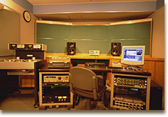

みなさんこんにちは！サウンドの大谷です。
さて、第３回目はマスタリング編になります。
そもそも、マスタリングって何よ？って話だと思いますが、
マスタリングとは、全ての収録曲が音量や質感のバラつきなく、１枚のCDとして聴けるよう調整を行い、曲間の秒数を決めたりフェードアウトなどを作ってく作業です。
マスタリングという行程を通ることで、１曲１曲がシャキ！っとして、音楽としてよりよく聴こえるようになります。
強引に例えてみれば、Yシャツにアイロンをかけるようなイメージに近いかもしれません。
結果、全体のバランスも整い、作品としてのまとまりもよくなります。
ここで作られた音が最終的な製品となり、実際に皆さんが耳にする音になるため、とっても重要な行程なんです。

マスタリングスタジオはこんな感じ
これらの作業は、CDのマスタリングを専門に行うスタジオでマスタリングエンジニアが行います。
そこに立ち会って、１曲づつ音を確認していきます。
前に手掛けた『ソニック・ザ・ヘッジホッグ』のオリジナルサントラ３枚組９３曲＋ヴォーカル・トラックス７曲のマスタリングに比べれば、今回は全５２曲なので半分だー！楽かな？と思いきや、ぜんぜんそんなことはありませんでした…。
マスタリング前の行程にさかのぼって、今回は、サントラ用の音源の準備にもひと手間かかっています。
ゲームに組み込まれているBGMデータは容量の制約がとても厳しく、決められた枠にデータを収めつつも、音楽としてよく聴こえるように、あれやこれやと様々な調整と工夫が施されています。
少ない容量でも迫力のある曲を鳴らしたいので、そこは、サウンドクリエイターの腕の見せ所になります。
逆に今回のCDでは、そういう意味での制約は一切ないため、サウンドトラック用の音源として、全ての曲で使われている波形を高音質なものに差し替え、DSのスピーカーではなく、モニタースピーカーで聴きながらミックスバランスを調整し、新たに全曲再収録しています。
なので、音質が全然違うと思います。
ゲーム中と同じものはサウンドテストでも聴けますしね。
そうして出来た音源を、マスタリングスタジオに持ち込み冒頭に書いたような作業を進めて行きます。
さて、次回はいよいよサントラ制作日記、涙の（？）最終回です。